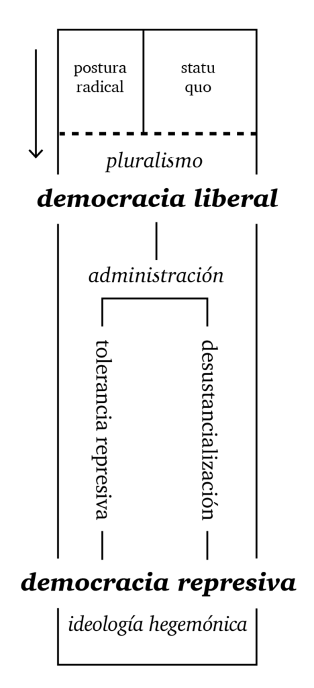
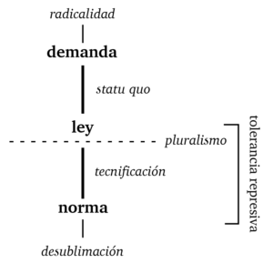

El presente artículo corresponde a la primera sección del documento “Democracia represiva en la institucionalidad medioambiental chilena: Protección de la naturaleza y Modelo de desarrollo extractivista neoliberal” (S. Aguilera, L. Clavería, F. Márquez, B. Olea, 2014), el cual fue el producto de un estudio teórico y de caso enmarcado en la adjudicación de fondos de investigación del programa Investigadores Jóvenes de la Universidad Alberto Hurtado el año 2014.
Como contextualización, adjunto el abstract de dicho documento:
Analizamos históricamente el nacimiento y procesos de cambio que experimenta la institucionalidad medioambiental chilena durante el período dictatorial, de transición democrática y posterior, dando cuenta de la existencia de una contradicción entre dos elementos en tensión: por un lado, la protección del medio ambiente, arraigada en el texto constitucional y la institucionalidad medioambiental, y por otro, la praxis del modelo de desarrollo extractivista neoliberal, introducido durante el gobierno militar y reproducido hasta el presente como fuerza principal de la economía nacional. Se propone que el segundo término se encuentra arraigado ideológicamente en el operar estatal y gubernamental por la instalación de una hegemonía ideológica durante el proceso dictatorial, lo cual a su vez produjo una separación inmediable entre política y economía, donde el énfasis se pondrá en las actividades pro-statu quo y en desmedro de toda postura radical. Opera un mecanismo que llamamos “democracia represiva”, que consiste en un simulacro de democracia por la inclusión de posturas radicales (anti-statu quo) al pluralismo, no antes sin administrarlas y neutralizarlas por medio de procesos burocráticos especialmente dispuestos. Finalmente, las posturas radicales, como la protección del medio ambiente, se desustancializan, anulándose a su vez que legitimando este sistema represivo.
Introducción al concepto de democracia represiva.
“Pero con la concentración de poder económico y político y la integración de elementos opuestos en una sociedad que emplea la tecnología como instrumento de dominación, el disentimiento efectivo aparece bloqueado allí donde podía surgir libremente: en la formación de la opinión, en información y comunicación, en la emisión de pensamiento y reunión. Bajo la norma de los medios monopolísticos —ellos mismos meros instrumentos de poder económico y político— se crea una mentalidad para la cual cierto y erróneo, verdadero y falso aparecen predefinidos siempre que afecten a los intereses vitales de la sociedad.”
Herbert Marcuse, “Tolerancia represiva”.
El proceso dictatorial, como cambio político y económico fundamentado en la redistribución total de poderes en la sociedad Chilena a través de la coerción física, consiste en la instalación de una ideología hegemónica –y su utopía– (Ritzer y Ryan 2010:305), la cual posteriormente genera las instituciones que le permiten dominar sin la necesidad de violencia explícita, reemplazándola por la política de consensos fortalecida por la Concertación.
La dominación cultural, entendida como cambio paradigmático en las formas de vida de los sujetos, permite la instalación de una coerción de índole cuasi-disciplinar en la sociedad Chilena, que de forma ideológica altera su concepción de mundo. Así, los métodos coercitivos se han trasladado desde la externalidad a la internalidad, como parte de esta nueva “cultura chilena” nacida en dictadura, amparada por amplios cambios institucionales y valóricos que se traducen en discursos interiorizados que reproducen paulatinamente a la cultura en cuestión (Robinson 1977:153), pasándose a carecer de la necesidad de una influencia externa constante (Benjamin 1977:46–59; Ci 1999:298; Freud 1992:12) al verse determinados los campos de acción y las posibilidades de pensamiento desde un nivel inconsciente por medio de la interiorización de los patrones normativos culturales.
La penalización moral que conlleva la violencia, entonces, se ve eliminada, a la par de la apertura de posibilidades a una legitimación implícita en estos procesos represivos.
Un avance o masificación de una cultura en la población supone, entonces, una mejorada capacidad para prescindir de la coerción externa sobre sus portadores (Ci 2006:152), en vista de que su masividad multiplica las herramientas psicológicas para su acato inconsciente y reproducción discursiva por parte de los sujetos mismos. Estaríamos, en otras palabras, frente a una forma ideológica de legitimación cultural basada en la masividad de su alcance.
En otras palabras, luego de la imposición de una ideología determinada por sobre otra por medio del proceso de dictadura militar, la cultura se ve incorporada en las conciencias de los sujetos de una forma –en apariencia– naturalizada (habituación inconsciente, como diría Weber [1964:170]), cesando el previo estado de tensión que requería de técnicas de dominación directas. De acuerdo a Marcuse (2010), este fenómeno de interiorización de la coerción cultural por parte de los sujetos se remite a la forma en que la sociedad capitalista invade, como cultura, hasta el inconsciente de los sujetos, quienes reproducen de esta manera su propia represión (Marcuse 2010:83). La cultura capitalista, así, introduce su gama de valores, disposiciones y roles en los sujetos, afirmando una sociedad que obtiene sentido dentro de su propia cohesión y funcionamiento cerrado (Abercrombie y Turner 1978:150), hermetizando la construcción a tal nivel que se reproduce y sostiene a sí misma. Se conforma, de esta manera, una ideología hegemónica (Mouffe 1991:189) donde se cumple a nivel inconsciente el célebre enunciado marxiano: “Las ideas de la clase dominante son las ideas dominantes en cada época” (Marx and Engels 1974:50).
Pluralismo.
Los sistemas políticos democráticos se fundan en una base de legitimidad social; es decir, de una aceptación por parte de la sociedad en conjunto frente a la pertinencia y validez de las instituciones delegadas a determinadas tareas de Estado y gobierno. Esta legitimidad surge del funcionamiento mismo de los procesos democráticos (McGowan 2007:113; Wolff 1965:5; Sabatini 1997:306).
A su vez, los procesos propios de la democracia son aquellos que posibilitan la existencia del pluralismo (McGowan 2007:113; Rogers 2009:75; Wolff 1965:14–15), que es la base que permite mediar la existencia de una diversidad de opiniones y posturas dentro de la política, garantizando la coexistencia de las mismas en un sistema deliberativo que medie las distancias entre privados y Estado, mitigando los conflictos que surgen de oposición entre posturas (McGowan 2007:113). De no existir un pluralismo capaz de mediar los conflictos entre partes políticas, el escenario democrático bien podría degenerar en una sociedad incapaz de establecer consensos ni resoluciones, por ende generando un ambiente de ingobernabilidad y desorden, tal como el infame caso de la Alemania de Weimar, en el ocaso de la primera guerra mundial (Weitz 2009:304). La premisa base del pluralismo sería, entonces, la aceptación de la diversidad grupal (Ci 2006:144) y el fomento de la misma (Wolff 1965:22), objetivo alcanzable por medio del concepto de tolerancia.
Tolerancia.
La tolerancia remite al “consentimiento pasivo de actitudes e ideas afianzadas y establecidas, incluso cuando su pernicioso efecto sobre el hombre y la naturaleza resulta evidente” (Marcuse 1965:107). Esto es: la necesidad de la democracia pluralista de permitir explícitamente posturas, opiniones e ideas diametralmente opuestas, generando un acto discursivo de aceptación de opuestos, operando como solución del liberalismo para la mediación de conflictos (Bohman 1995:253). A su vez, el pluralismo nutrirá al sistema político con la inclusión de una diversidad de posturas representadas en las instancias parlamentarias, otorgando así la legitimidad que requiere para su reproducción. Esta reproducción del sistema político por medio de su legitimidad vuelve al pluralismo en un medio favorable y necesario para la preservación del sistema político democrático (Wolff 1965:17).
Por ende, vemos cómo el pluralismo resulta la condición necesaria para el óptimo funcionamiento y legitimación de la democracia, y es la tolerancia el precepto que permite que la democracia pluralista funcione en primer lugar.
Ocurre que distintos grupos de interés –entendidos como agrupaciones que abarcan la capacidad de agencia de múltiples individuos, obrando como mediadores entre el Estado y los privados al perseguir sus propios fines políticos en la ausencia de un sistema democrático directo (Durkheim 1966:62; Wolff 1965:16)– pueden encontrar oposición entre ellos, o bien pueden identificar que sus objetivos son contradictorios con los objetivos de otros grupos de interés, dificultándose la realización de ambos (McGowan 2007:112). Considerando que los grupos de interés posibilitan a la democracia por medio del pluralismo, resultaría ilógico resolver ambas contradicciones a la vez, en tanto esto implicaría la inhabilitación de uno de los dos grupos, lo cual se contradiría con el principio mismo de pluralismo: la convivencia de posturas. Esta naturaleza irreconciliable entre conflictos es una base reconocida para los teóricos del liberalismo (Bohman 1995:253). El caso del presente trabajo comprende la contraposición irreconciliable entre las posturas de protección de la naturaleza y de desarrollo económico extractivista. Si es que se desea mantener la legitimidad que posibilita a la democracia (pluralismo), entonces resulta necesario defender la convivencia y evitar a como de lugar que las posturas ejecuten victorias resolutas sobre las otras.
Tal como manifiestan las palabras previas de la Critique of Pure Tolerance (Wolff, Moore, y Marcuse 1965:viii), “la tolerancia, al examinarla, resultó ser –en niveles variables– máscaras hipócritas para cubrir pésimas realidades políticas”. El aspecto negativo al que se refieren Marcuse et al. es la tolerancia represiva como mecanismo para la excusa y defensa de la democracia. La convivencia entre posturas diferentes que exige el pluralismo se transforma necesariamente en un valor en sí para la democracia (Wolff 1965:14–15), en vista de que su necesidad resulta incuestionable y primigenia en tanto legitimidad, en efecto transformándola más en una finalidad que en un medio. A su vez, la tolerancia se vuelve en el valor en sí para el pluralismo, al significar este, a su vez, el motor generador de legitimidad. Lo que ocurre en consecuencia, a nivel político-práctico, es una solidificación del campo político (en el sentido bourdiviano [Meichsner 2007:11]): el producto de las discusiones bajo la tolerancia, al carecer de solución lógica, genera una tensión permanente que se manifiesta en la constante negociación y la promediación de deliberaciones políticas, encausando todo progreso dentro los límites de lo presente, de lo aceptable: del statu quo. Esta promediación se encuentra siempre situada en la ideología, en el sentido de que las posturas ya instaladas dentro del campo político presentan un sesgo ideológico general, resumido en el statu quo.
Legitimación y statu quo.
Con statu quo nos referimos al cuerpo de posturas e ideas estatuidas que conforman el estado presente de la sociedad, las cuales, desde su posición hegemónica, ofrecen resistencia al cambio social; es decir, una posición conservadora frente a la política (Darity 2008:488), la cual establece una inclinación que define aquello tolerable e intolerable según la operación de los organismos de Estado y las instituciones regidoras de procesos políticos por función de la influencia ideológica que impregna tales operaciones burocráticas.
La influencia que ejerce el statu quo en el campo político implica la prevalencia estructural de ciertas posturas nucleares al modelo, además de una fuerte contraposición a cualquier otra postura que se oponga a estos presupuestos basales (Mills 1989:430), de tipo cuasi-dogmático/ideológico.
Resulta de la influencia del statu quo en las discusiones entre posturas una reproducción de la “condición neutra” del tema a discutir: una protección del estado actual de cosas, en tanto el ejercicio de igualación de dos posturas comprende la supuesta existencia de un punto “neutro”, una normalidad implícita que meramente responde al diseño ideológico de las reglas de los procesos burocráticos. El statu quo, así, impone prenociones ideológicas a todo debate político, las cuales benefician y legitiman a otras posturas pro-statu quo.
La solidificación de la política antes mencionada sumada al rol del statu quo se materializa en la aparición de productos de discusiones políticas que reflejan constantemente a la ideología hegemónica, de forma que ciertas posturas políticas radicales no podrán ver su reflejo práctico realizado al verse sus opiniones constantemente mermadas por la imposición de tolerancia y subsecuente negociación frente a sus posturas contrarias (“la antítesis es re-determinada en el sentido de la tesis” [Marcuse 1965:113], i.e., a favor del statu quo). Entonces, la función básica del sistema democrático pluralista –la representación democrática– no será efectiva, ya que en la práctica existe un sesgo ideológico en la distribución de las posturas, donde algunas serán más afines al statu quo del sistema político, y por ende más propensas a ver sus opiniones apoyadas y materializadas luego de las deliberaciones. Así, esta “carga” en el balance político reproducirá constantemente una realidad ideológica, constantemente excluyendo toda radicalidad, y efectivamente despojando dichas posturas de su derecho a la representación dentro del pluralismo, falseando, entonces, la labor del pluralismo como base legitimante del sistema democrático.
Por lo tanto, es identificable una contradicción en el modo de funcionar de la democracia pluralista, en el sentido de que una real deliberación libre entre posturas es incapaz de existir, ya que prepondera una influencia ideológica que nivela hacia el statu quo, reproduciéndolo, y finalmente pre-definiendo el resultado de las disputas políticas –generando un simulacro de democracia que en la práctica no es más que la domesticación de las ideas radicales (Wolff 1974:472).
Este problema, que en el fondo radica uno de legitimación, tiene como subproducto el hecho de que “exist[a] innegablemente una considerable brecha entre el ideal de la agencia colectiva política (…) y la extensión en la cual es puesta en práctica” (Ci 2006:145). Las expectativas que profesa el sistema político democrático con su promesa de agencia política son muy altas, en tanto significan sistemas de deliberación popular o bien de representatividad capaces de alzar al campo político (por medio de los grupos secundarios de Durkheim) que, en teoría, fuesen capaces de elevar las demandas civiles. Este problema de agencia se liga directamente a factores institucionales que limitan directamente el alcance de la democracia al protegerse la división constitutiva del capitalismo: política/economía (Mires 1994:93, Sabatini 1997:312). La economía, siendo para muchas vertientes teóricas el determinante principal de las sociedades, no puede verse tocada por la política (Ci 2006:148), al constituir el núcleo de la ideología hegemónica. Por consiguiente, la democracia encuentra su límite en el mercado. Quizás sólo durante la revolución jacobina, alrededor del año 1793 en Francia, se volvió realidad por primera vez la idea de que el poder político pudiese controlar el porvenir del mercado: un salto político de tipo protosocialista efectuado a través de la promulgación de un aparato de fijación de precios máximos, el maximum general (Fehér 1989). La traducción de esta suerte de “muro” para la acción de las instituciones y la democracia en general respecto de la institucionalidad medioambiental será vista en profundidad al explayarse el concepto de desustancialización.
La libertad de acción y la efectividad de acción se separan implacablemente en las democracias de mercado (Ci 2006:150). Los procesos de participación política en las democracias pluralistas podrán ser múltiples, pero siempre colisionarán con la inamovilidad de los preceptos basales de la ideología hegemónica (el modo productivo imperante), reproducida y protegida por el statu quo.
Para Ci (2006), esta incapacidad de la agencia política profunda en democracia se ve reemplazada (sublimada) por la libertad en la vida privada de los sujetos. Tal es la utopia liberal: la inacción –o bien, inocuidad– política; tolerancia para todo dogma neoliberal, e intolerancia para cualquiera que osase alterar el funcionamiento del mercado –o bien, del modelo extractivista neoliberal, para el caso que veremos en las siguientes secciones.
Dada la solidez del sistema político y un pluralismo que inhibe la introducción de posturas nuevas al campo político es que, a modo de solución, opera una inclusión discursiva de posturas nuevas –radicales–, con la finalidad de cumplir las cuotas de representación que figuran en las expectativas democráticas. Estas nuevas posturas radicales serán absorbidas por la influencia y el poder de las posturas oficialistas en la práctica, y en el proceso burocrático serán administradas en pos de minimizar su capacidad de injerencia y cambio social. Esta es la tesis principal que denunciaremos al elaborar en profundidad el movimiento completo de la democracia represiva.
Democracia represiva.
[caption id=“attachment_55” align=“alignright” width=“222”] 
{kind=link}
El gráfico 1 representa la versión teórica del concepto de democracia represiva. A continuación, explicaremos su movimiento particular.
Con radicales nos referiremos a posturas alejadas y diferentes a las que conforman el statu quo, cuyos proyectos y demandas se encuentran en disyuntiva con las posibilidades existentes dictadas por las posturas que actualmente dominan el campo político y la ideología hegemónica.
La radicalidad a la que nos referimos plantearía conflictos profundos, a saber, que “desafían el marco de suposiciones morales y procedimientos políticos.” (Bohman 1995:254), en vista de que las soluciones que anhelan suelen no ser inmediatas, ni superficiales, ni independientes, sino que apelan problemas sistémicos o estructurales.
La participación de posturas radicales en el campo político es, como ya vimos, una concesión del pluralismo en pos de obtener legitimidad para la democracia. La convivencia del radicalismo con el statu quo es la clave que permite que la democracia liberal cese de ser un sistema abiertamente opresivo, y así generar una legitimidad que le permita expandirse como cultura. Por ende, hasta este punto, la democracia cumple con los valores del pluralismo, y podría calificarse como liberal. La radicalidad entra al campo político por medio de la administración, que corresponde a los mecanismos que defienden al pluralismo (conservador) de la radicalidad (progresista, anti-sistema). Los métodos de administración que trataremos son dos: la tolerancia represiva y la desustancialización.
Desustancialización.
[caption id=“attachment_54” align=“alignright” width=“300”]

Gráfico 2[/caption]El concepto de desustancialización refiere a los procesos de penetración de la radicalidad al campo político en el contexto de democracia pluralista. La desustancialización opera, en resumidas cuentas, mediante la tecnificación de las demandas, y por lo tanto, es el momento específico en que el statu quo pregna a la radicalidad, generando en consecuencia un producto desublimado –diferente al demandado– que se atiene a los intereses y posibilidades de la ideología hegemónica. Por consiguiente, todo el aspecto radical de la demanda se contrasta con el statu quo, y posteriormente queda administrada y neutralizada de todo aquello que hubiese puesto en entredicho los valores estructurales de la ideología hegemónica.
En concreto, el concepto comprende tres partes principales –demanda, ley, y norma– tal como puede verse en el gráfico 2.
En un primer lugar, vemos cómo se alza una demanda política en la discusión pública, con una necesidad o falencia en búsqueda de solución. Luego, diversos mecanismos hacen posible la acogida de la demanda (interés por parte de una postura dentro del campo, popularización discursiva de la demanda, presión internacional, etc.) para producir una ley que ofrezca lineamientos en pos de una solución a la problemática. Es decir, desde el poder político –normalmente comenzando desde el ejecutivo– se genera un proyecto de ley que será discutido en las instancias democráticas pertinentes.
Ya en este punto inicial, la radicalidad obtuvo ingreso al campo político, por lo que el precepto pluralista de la democracia se ha cumplido tempranamente, otorgándole legitimidad. En términos políticos, se realiza el pluralismo: se incluyen nuevas opiniones a la discusión oficial.
La ley producida, en tanto lineamientos que darán forma a la sociedad, es discutida para su aprobación por parte de las posturas opuestas dentro del campo político. En el momento de discusión, ocurre que, por obra del statu quo como reflejo de la ideología hegemónica, el funcionamiento del proceso burocrático beneficiará a ciertas posturas: e.g., posturas que se condigan con el statu quo o bien que no se opongan a él; por lo que ya en el tiempo inicial de la discusión nos encontramos con la existencia de una ventaja considerable en favor de ciertas opiniones y en desmedro de otras.
Al respecto, argumenta Marcuse: “La decisión entre opiniones contrapuestas está ya tomada antes de llegar a exponerlas y discutirlas –tomada (…) no por una dictadura cualquiera, sino más bien por la marcha normal de los acontecimientos, que es la marcha de los acontecimientos administrados, así como también por la mentalidad formada en ellos.” (Marcuse 1965:113). Toda idea radical respecto del statu quo se ve deslegitimada o negativizada al no corresponder directamente con aquello dictaminado por la ideología hegemónica en sus diferentes manifestaciones (“la mentalidad”). Esto sucede en tanto la sociedad contemporánea legisla, delibera y progresa tal como si fuese gobernada por leyes inexorables (Marcuse 1959:208), siendo que en realidad las leyes que gobiernan esta sociedad –tanto en el diseño de los procesos políticos como en las discusiones políticas mismas– fueron dictadas de antemano por la ideología hegemónica, especificando el “punto neutro” de toda discusión. “Con su poderío institucional, la cultura hegemónica puede silenciar (en los escenarios de negociación y resolución de conflictos) a quienes actúan desde fuera de sus parámetros ético-ambientales.” (Sabatini 1997:194)
La tolerancia, en el pluralismo, pareciera existir sólo para aquellas posturas políticas establecidas bajo los lineamientos del statu quo, mientras que se presenta como intolerancia para toda radicalidad que se desvíe de él (Wolff 1965:37). La postura radical, al ingresar al campo político a través de la ley, se verá administrada de forma inevitable por la necesidad de adecuar su contenido y sustancia en forma técnica a los procesos y funcionamientos de la maquinaria estatal y gubernamental. Este proceso de tecnificación es el momento específico en que el statu quo pregna de ideología a la postura radical, en vista de la necesidad estructural de llevar (administrar) a la demanda a una forma material, definida y consensuada políticamente. La ley, en tanto directriz general, requiere de su contraparte práctica: la norma, que por definición es el cuerpo técnico que dota de funcionamiento interno y específico a la ley. La norma es discutida y diseñada con ciertos intereses políticos y técnicos en mente, que corresponden a las posturas ideológicas de las partes entrometidas en la deliberación (incluyendo instituciones, empresas involucradas, etc.). Pero esta opinión experta, aún cuando lo pretende, no es capaz de emitir juicios objetivos e imparciales, en vista de que “la información científica y técnica, especialmente cuando no existe equilibrio de fuerzas, suele ser utilizada y hasta cierto punto manipulada por la parte fuerte para el beneficio de sus posiciones. Quien financia estudios que generalmente son caros, ejerce influencia sobre los resultados obtenidos.” (Sabatini 1997:304).
Finalmente, la tecnificación en la administración da como resultado una transformación de la demanda radical inicial en un constructo esencialmente diferente pero aparentemente idéntico; es decir, cuyo problema superficial (o de rótulo) es tocado por la discusión política, pero a la vez manipulando la sustancia interna de la demanda (norma) para traducirla a los términos técnicos que gobiernan la estructura hegemónica de forma que el contenido radical sea despojado de su retórica. De ahí el término desustancialización: remoción de aquello fundamental que dota de sustancia a la demanda.
La norma producida y promulgada, en tanto reemplazo de una solución por otra administrada, responderá, bajo los términos de la teoría crítica de Frankfurt, a una desublimación represiva. En el psicoanálisis, una sublimación responde a un “cambio en la aspiración y el objetivo del instinto” (Marcuse 1983:189) hacia un objetivo pulsionar socialmente permisible, aunque conservando “la conciencia de los renunciamientos que la sociedad represiva impone” (Robinson 1977:194). En otras palabras, una sublimación es el reemplazo de una solución “reprochable” de una demanda por otra solución socialmente permisible. Por otro lado, una desublimación represiva es una sublimación que carece del elemento consciente: es una satisfacción ilusoria para la demanda, que si bien la sacia, también reprime (Robinson 1977:194), en tanto invisibiliza el reemplazo de una solución directa por otra solución acomodada al statu quo. En términos marxistas, la diferencia sublimación/desublimación es análoga a la valoración que Marx hace de la esclavitud versus el trabajo asalariado: en la esclavitud, el esclavo es muy capaz de identificar su propia condición de opresión explícita (sublimación), mientras que para proletario resulta más complejo ver y tomar conciencia acerca de su situación de explotación oculta en la extracción de plusvalía del trabajo asalariado (desublimación).
La desublimación represiva resulta una herramienta simultánea de extensión de la libertad e intensificación de la dominación (Marcuse 2002:76), debido a su rol tanto de satisfacción social como de adecuación de demandas y radicalidades al statu quo (Marcuse 1983:190). Se ofrece una solución a la demanda que no es directamente atingente, sino que satisface de forma indirecta, sin que esta falta de eficiencia sea evidente para el demandante. En el caso medioambiental es sencillo ver la desublimación en la forma en que las empresas extractivistas o contaminantes ofrecen “soluciones” a los daños ambientales que pretenden ejercer que consisten en ofertas que en poco y nada solucionan la demanda de protección del medio ambiente (construcción de espacios públicos, por lo general).
Tolerancia represiva.
Volviendo a los gráficos: en un nivel superior a la desublimación represiva y desustancialización se encuentra operando la tolerancia represiva.
Toda postura antitética (radical) que busque superar la contradicción principal (ideología hegemónica) se ve administrada en pos de la anulación de su capacidad de praxis. Traducido a nuestro caso: la defensa del medio ambiente se opone directamente al sesgo extractivista de la economía nacional, por lo tanto, el ejercicio de tal postura se ve forzosamente enmarcado en procesos burocráticos que prácticamente aseguran un consenso entre partes que beneficiará al extractivismo. El resultado es una opinión teóricamente antitética, pero materialmente inocua. La administración de las radicalidades, en resumen, se basa en la permisión de su ingreso al campo político, su posterior desublimación en favor del statu quo, y finalmente el alarde discursivo de la correcta operación del pluralismo. En otras palabras, la ideología hegemónica se ve beneficiada por la existencia y participación política de las radicalidades, puesto que, al absorber dichas posturas y neutralizar su contenido (desustancialización), obtiene la legitimación (pluralismo) del haber hecho partícipe a un nuevo actor en el sistema político (la radicalidad), cuando en la realidad la radicalidad se vio desublimada en la fase de tecnificación de la desustancialización. Nuevamente al caso: las posturas “radicales” de las comunidades que defienden su medio ambiente son capaces de ganar una voz dentro del sistema democrático gracias a la institucionalidad de los EIA (estudios de impacto ambiental) –acto que, de pasada, legitima a la institucionalidad medioambiental– pero ocurre que, en la discusión, operará la desustancialización, delimitando el objetivo final de dicha postura por medio del acato o promulgación de normativas tecnificadas, anulando su capacidad de victoria.
La consecuencia de esta operación, en general, es una democracia represiva, que dispone de un mecanismo interno de legitimación, autopoiesis y defensa contra el cambio. ¿Por qué represiva? Puesto que dispone de instituciones y procesos para la agencia política, pero una agencia administrada y severamente limitada, ofreciendo un campo de acción mínimo que desde un principio rehúsa a tocar temas estructurales y radicales que pongan en entredicho a la ideología dominante, reprimiendo a través de su completo funcionamiento la posibilidad de un cambio político real. La división entre política y economía produce que la postura radical siempre sea vuelta inocua por medio de la burocracia administrativa específicamente concebida para ello, generando un simulacro democrático que sólo reproduce el statu quo neoliberal.
De forma concluyente, podemos apreciar que la institucionalidad medioambiental chilena no es capaz de resolver conflictos ambientales (Sabatini 1997:300), al menos de forma democrática, en vista de que fue concebida con tal vicio en mente, por medio de la operación de los mecanismos explicitados en la presente sección, que revelan a las formas operativas de los organismos medioambientales como sesgados hacia la protección y el fomento de la matriz económica extractivista neoliberal en lugar de estar abiertas a la acogida democrática de demandas ecologistas y/o la llevada a la práctica de tales demandas, las cuales, por lo demás, tienen un lugar propio en la Constitución de Chile (Art. 19, Nº8).
Referencias:
- Abercrombie, N., y B. S. Turner. 1978. “The Dominant Ideology Thesis.” The British Journal of Sociology 29(2):149–70.
- Bauman, Z. 2009. Ética Posmoderna. Siglo Veintiuno Editores.
- Benjamin, J. 1977. The End of Internalization: Adorno’s Social Psychology. Telos.
- Bohman, J. 1995. “Public Reason and Cultural Pluralism: Political Liberalism and the Problem of Moral Conflict.” Political Theory 23(2):253–79.
- Ci, J. 1999. “Disenchantment, Desublimation, and Demoralization: Some Cultural Conjunctions of Capitalism.” New Literary History 30(2):295–324.
- Ci, J. 2006. “Political Agency in Liberal Democracy.” Journal of Political Philosophy 14.
- Darity, W. A. 2008. “International Encyclopedia of the Social Sciences (a-C).” vol. 1.
- Durkheim, É. 1966. Lecciones De Sociología: Física De Las Costumbres Y Del Derecho. Buenos Aires: Schapire.
- Fehér, F. 1989. La Revolución Congelada: Un Ensayo Sobre El Jacobinismo. 1st ed. Madrid: Siglo Veintiuno Editores.
- Freud, S. 1992. “El Porvenir De Una Ilusión.” in Obras completas, volumen XXI. Buenos Aires: Amorrortu editores.
- Kaye, H. L. 1991. “A False Convergence: Freud and the Hobbesian Problem of Order.” Sociological Theory 9(1):87–105.
- Marcuse, H. 1959. “Karl Popper and the Problem of Historical Laws.” Partisan Review 36:1–37.
- Marcuse, H. 1965. “La Tolerancia Represiva.” Pp. 1–19 in A Critique of Pure Tolerance. Boston: Beacon Press.
- Marcuse, H. 1983. Eros Y Civilización. Madrid: Sarpe.
- Marcuse, H. 2002. One-Dimensional Man. London: Routledge Classics.
- Marcuse, H. 2010. “La Liberación De La Sociedad Opulenta.” in La tolerancia represiva y otros ensayos, edited by César de Vicente Hernando. Madrid: Catarata.
- Marx, K., and F. Engels. 1974. La Ideología Alemana. 5 ed. Montevideo: Pueblos Unidos.
- McGowan, J. 2007. “Reviewed Work: Pluralism and Liberal Democracy By Richard E. Flathman.” Political Theory TI - 35(1):111–14.
- Lukács, G. 2008. Historia Y Conciencia De Clase. Santiago: Quimantú.
- Meichsner, S. 2007. El Campo Político en La Perspectiva Teórica De Bourdieu.
- Mills, C. W. 1989. “Determination and Consciousness in Marx.” Canadian Journal of Philosophy 19(3):421–45.
- Mires, F. 1994. “La Reformulación De Lo Político.” Nueva Sociedad (134):86–101.
- Mouffe, C. 1991. “Hegemonía E Ideología en Gramsci.” Pp. 1–31 in Antonio Gramsci y la realidad colombiana. Ediciones Foro Nacional por Colombia.
- Polanyi, K. 1944. La Gran Transformación. Crítica Del Liberalismo Económico. Madrid: Ediciones de La Piqueta.
- Ritzer, G., and M. Ryan. 2010. “The Concise Encyclopedia of Sociology.” 1–777.
- Robinson, P. A. 1977. La Izquierda Freudiana. Barcelona: Granica editor.
- Rogers, M. L. 2009. “Dewey, Pluralism, and Democracy: a Response to Robert Talisse.” Transactions of the Charles S. Peirce Society 45(1):75–79.
- Sabatini, F., and C. Sepúlveda. 1997. Conflictos Ambientales: Entre La Globalización Y La Sociedad Civil. CIPMA.
- Weber, M. 1964. Economía Y Sociedad. Esbozo De Sociología Comprensiva. 2nd ed. México: Fondo de Cultura Económica.
- Weitz, E. 2009. La Alemania De Weimar. Madrid: Turner.
- Wolff, R. P. 1965. “Beyond Tolerance.” in A Critique of Pure Tolerance. Boston: Beacon Press.
- Wolff, R. P. 1974. “Marcuse’s Theory of Toleration.” Polity 6(4):469–79.
- Wolff, R. P., B. Moore, and H. Marcuse. 1965. A Critique of Pure Tolerance. Boston: Beacon Press.